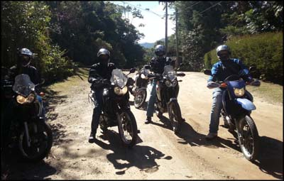
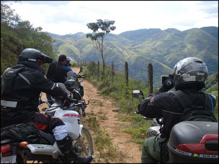
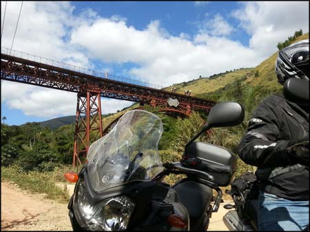

Esse foi um passeio do tipo "Bate e Volta". Saida de manhã bem cedo, retornando pra casa no final do dia. O Trajeto foi pensado a partir da Casa do Alemão, na Rodovia Washington Luis, altura de Campos Elíseos, com planos de caçar estradas de terra partindo da subida para Petrópolis, e finalizando em Arcádia, Paty do Alferes.
[caption id="attachment_89" align="aligncenter" width="300"] Grupo reunido e pronto![/caption]
Grupo reunido e pronto![/caption]
Depois que todo o grupo se reuniu na Casa do Alemão, partimos para a estrada. Na subida para Petrópolis, começamos nosso desvio, passando por pequenos vilarejos, e muita paisagem legal.
Assim que alcançamos a primeira estrada de terra, começou a diversão. Controlar a moto na areia, lama, barro com valetas e muitos buracos, principalmente para entusiastas amadores como nós é sempre divertido. Ainda mais porque não uso pneu próprio para isso, mas um simples pneu de uso misto original da motoca. Vale a brincadeira!
[caption id="attachment_90" align="aligncenter" width="400"] Início do Off Road[/caption]
Passamos por trechos de vegetação bem densa, muita coisa legal para ver. Algumas descidas bem complicadas, com bastante cascalho no chão, que exigiu sangue frio e muito cuidado para descer sem cair. No fim tudo deu certo.
[caption id="attachment_91" align="aligncenter" width="450"] Visual ...[/caption]
Uma boa parte do trecho que fizemos é conhecido como "Caminho do Imperador", que passa sob uma ponte da estrada de ferro, mas como acho que não seguimos o caminho à risca, não vale chamar desse nome. Tenho que me localizar melhor na próxima para dar a dica aqui...
[caption id="attachment_92" align="aligncenter" width="450"] Ponte da estrada de ferro[/caption]
No fim, vai pequeno vídeo com pedaços do passeio.
[vimeo vimeo.com/67079103]
- Motocicleta atual: Yamaha Ténéré 250